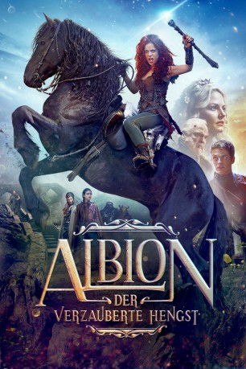
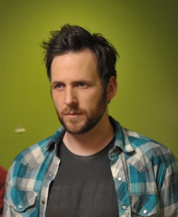
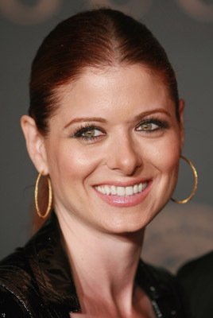

#7796 Albion - Der verzauberte Hengst
Alternativ: Albion: The Enchanted Stallion
 
 IMDB-Wertung: 5.2 / 10
IMDB-Wertung: 5.2 / 10  Metascore: 0
Metascore: 0 
Das Leben der zwölf Jahre alten Evie ändert sich schlagartig, als sie einem majestätischen, schwarzen Pferd begegnet. Denn der Hengst ist kein gewöhnliches Tier, sondern magisch und öffnet das Tor in eine fantastische Welt namens Albion. In dem mystischen Land lernt das junge Mädchen eine Menge neue Leute wie die Äbtissin und die Königin kennen und schließt sogleich Freundschaften, muss sich aber auch Feinden wie dem fiesen General Eeder gegenüberstellen. Doch ihr Aufenthalt ist nicht nur ein aufregendes Abenteuer, sondern ernster und bedeutender als zunächst gedacht, denn erst mit der Zeit wird klar, warum Evie dort gelandet ist. Ihre Ankunft dient einem größeren Ziel; in dem Teenager steckt der verborgene Schlüssel zur Rettung des gesamtes Volkes von Albion vor dem drohenden Untergang...
Jahr: 2016
Dauer: 105 Minuten
FSK: 6
Land: USA Studio: Koch MediaTonspuren: DTS - ,
Untertitel: Deutsch,
Auflösung: 1080p (1920x808) Größe: 6031 MB
Genre: Komödie, Abenteuer, Fantasy, Familie
Regisseur: Castille Landon
Drehbuch: Castille Landon
Soundtrack: George Kallis
Darsteller:
- Avery Arendes als Evie
 Stephen Dorff als Connor
Stephen Dorff als Connor- Johnny Sequoyah als Molly
- Erik Lunseth als Dad
- Castille Landon als Eriu
- Daniel Sharman als Lír
 John Cleese als General Eeder
John Cleese als General Eeder- Rob Callender als Missing Finger Attendant
- Liam McIntyre als Eremon
 Jennifer Morrison als The Abbess
Jennifer Morrison als The Abbess-  Ryan O'Nan als Gally / Daimhin
 Richard Kind als Brian
Richard Kind als Brian-  Debra Messing als The Queen
- Heather Rae Friedenberg als Molly's Mom
- Shelby Ronea als Party Girl
- Nitrous als Dag Dia
- Hans als Dag Dia
- Hanna Brock als Eeder's Serving Girl
- Dori A. Rath als Forager
- Joseph Restaino als Forager
- Mia Restaino als Baby Evie
- Suzanne Ensmann als Danann Villager
- Lori Brock als Danann Villager
- Hailey Brock als Danann Villager
Datei: X:\2016(A-F)\Albion - Der verzauberte Hengst (2016, FSK6, 1920x808).mkv seit 20.12.2017
Festplatte: HD 2016(A-Z)
 Es gibt insgesamt 147 Filme in der Gruppe '2016(A-F)'
Es gibt insgesamt 147 Filme in der Gruppe '2016(A-F)'